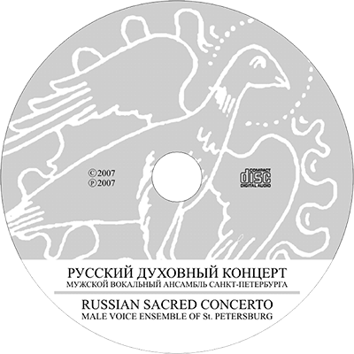

Russian Sacred Concerto

Full album information:
Russian-Sacred-Concerto.pdf
Russian-Sacred-Concerto.pdf
- You, transcending mind and reason, O Mother of God
- Who shall separate us from the love of Christ?
- Today Christ is born
- Lord, make me to know mine end
- We praise Thee, O God
- Blessed is he that considereth the poor
- Today salvation has come to the world
- Virgin, Mother of God, rejoice
- The pre-eternal plan of God
- We, who in a mystery represent the Cherubim
- Wise thief did thou make worthy of paradise
- Bless the Lord, o my soul
- Farewell my joy
- Let you pray, my friend